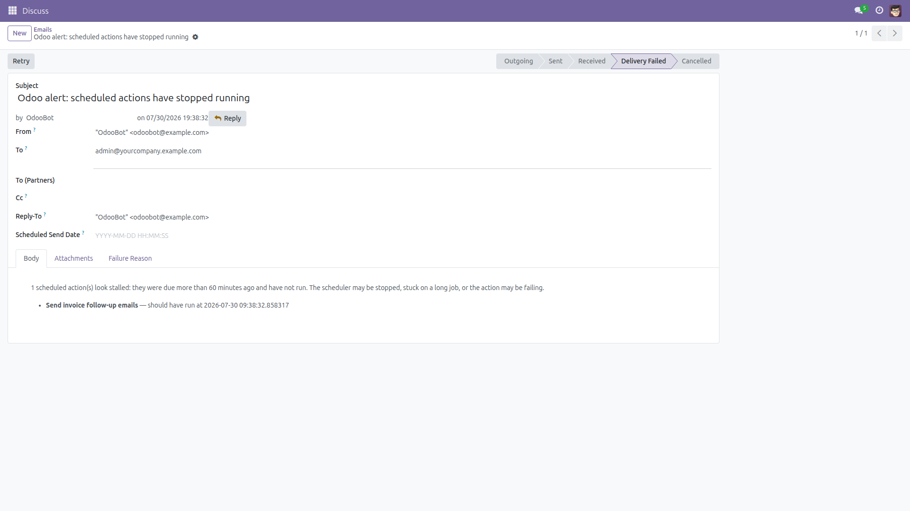
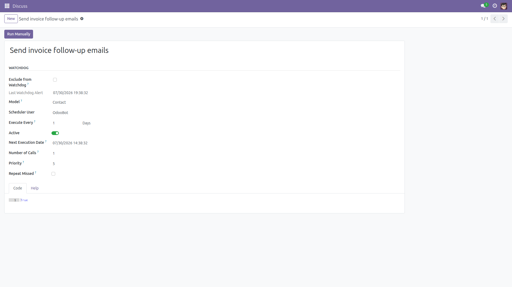

Cron Watchdog Alerts
Know the minute your scheduled actions stop.
Scheduled actions fail silently — a stuck job, a dead worker, an auto-disabled action — and you
find out days later when invoices were never mailed and inventory never synced. This module
emails administrators as soon as any scheduled action is overdue, with a second
safety net on normal page loads that catches even a fully dead cron worker.
Free and open source (LGPL-3), Odoo 14.0 through 19.0.
- Zero config — works on install: 60-minute lag, one alert per action per 24 h.
- Immediate email — sent in-process, not queued: the mail queue may be exactly what's down.
- Dead-worker detection — a throttled check on backend page loads still fires when no cron runs at all.
- Per-action control — exclude noisy or unimportant jobs with one checkbox; last alert time shown on each action.
- Honest limits documented — if the worker is dead and nobody opens Odoo, pair with an external uptime check.
Screenshots

The alert administrators receive: which scheduled actions are overdue and since when. Sent immediately, not queued — the mail queue may be exactly what is down.

Every scheduled action gets a Watchdog section: exclude noisy jobs with one checkbox, and see when the last alert fired.
Installation
- Open Apps, remove the default "Apps" filter if needed, and search for Cron Watchdog Alerts.
- Click Install. Only standard modules (
mail, web) are required — alerting is active immediately.
Configuration
- Nothing required. Optional System Parameters (Settings → Technical → System Parameters):
cron_watchdog_alert.lag_minutes (default 60, minimum 15) and cron_watchdog_alert.enabled.
- To ignore a specific job: open the Scheduled Action → Watchdog section → tick Exclude from Watchdog.
Usage
- The watchdog job runs every 30 minutes; any action overdue beyond the lag triggers one email to all Settings administrators with an address.
- Backend page loads run a throttled check too (at most every 15 minutes) — so a completely dead scheduler is reported while people keep using Odoo.
- Each stalled action re-alerts at most once per 24 hours; the Last Watchdog Alert timestamp is visible on the action's form.
Version notes
Identical behavior on every supported series (14.0 – 19.0).
License: LGPL-3 · Source on GitHub · Issues and contributions welcome.